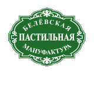
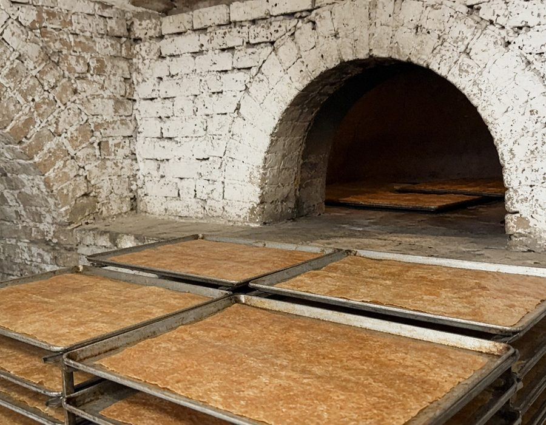

Белевская Пастила создается исключительно вручную из сочных антоновских яблок по неизменной уникальной технологии.
По сей день мастера готовят пастилу в русской печи, которая была построена в XIX веке.
Нежнейшее яблочное пюре, яичные белки и цельные ягоды, орешки или корица — только натуральные ингредиенты и проверенный временем рецепт создают подлинный вкус пастилы.

Русская печь XIX века — до сих пор в работе. Антоновка, белок, ягоды и орехи: без конвейера, небольшими партиями.
Линейки, которыми живёт мануфактура.